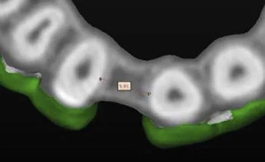
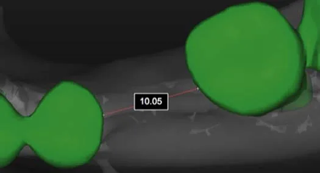

نسخه استخراجشده؛ ترجمه یا تأیید علمی انجام نشده است. وضعیت: captured
موقعیت ایدهآل ایمپلنت در سه محور تعریف میشود و هر سه باید همزمان درست باشند. این درس محور اول است: مزیودیستال (محور X).
قاعدهی اول — فاصله از ریشهی دندان مجاور. دستکم ۱٫۵ میلیمتر از ریشه یا ساختار دندان مجاور، و میان دو ایمپلنت مجاور دستکم ۳ میلیمتر. حفظ این فاصله، احتمال آسیب به دندان و عوارض پس از عمل را کم میکند.
قاعدهی دوم — نقطهی هدف. ایمپلنت باید در نقطهی میانی فاصلهی مزیودیستال قرار بگیرد. توجه کن که این با «رعایت حداقل فاصله» یکی نیست: میتوانی ۱٫۵ میلیمتر از یک دندان فاصله داشته باشی و همچنان از مرکز فضا خارج باشی — و آن هم یک خطای موقعیت است.
قاعدهی سوم — فاصله از ساختارهای حیاتی. پس از شناسایی ساختارهای حیاتی، ایمپلنت باید بیش از ۲ میلیمتر از کانال آلوئولار تحتانی یا فورامن منتال فاصله بگیرد. این همان حاشیهی ایمنی است که در بحث کانال مندیبل دیدی و حالا بهصورت یک قاعدهی موقعیتدهی بازمیگردد.
و یک تکنیک برای فضاهای بزرگتر: وقتی چند ایمپلنت در فضایی محدود لازم است، میتوان آنها را آفست کرد — یکی به سمت باکال و دیگری روی قطر به سمت لینگوال. این چیدمان قطری، فضای مزیودیستال مؤثر را ۰٫۵ تا ۱ میلیمتر افزایش میدهد.

خطاهای محور مزیودیستال، پیامدهای خودشان را دارند و اغلب پروتزیاند نه جراحی:
ایمپلنتهای خیلی نزدیک به هم — نتیجهاش ناتوانی در ساخت پروفایل خروج مناسب برای تاجهاست. بافت نرم بین دو ایمپلنت فضای کافی برای شکل گرفتن پیدا نمیکند.
فاصلهی بیشازحد از دندان مجاور (بیش از حدود ۲ میلیمتر) — نتیجهاش پروتزی است که برای رسیدن به نقطهی تماس، شکل غیرمعمول پیدا میکند. و این شکل غیرمعمول دو پیامد دارد: عوارض بیومکانیکی و گیر کردن غذا.
موقعیت بیشازحد خلفی — میتواند ایمپلنت را غیرقابل ترمیم کند، یا پروتزی بسازد که کانتیلور قدامی و خلفی دارد.
الگوی مشترک این خطاها را ببین: هیچکدام در روز جراحی مشکلی نمیسازند. ایمپلنت اینتگره میشود، بیمار دردی ندارد، و همه چیز موفق به نظر میرسد. مشکل ماهها بعد در مرحلهی پروتز ظاهر میشود — جایی که دیگر جراحی تمام شده است.
برای همین، مطمئنترین راه کم کردن خطاهای موقعیتدهی، توسعهی یک راهبرد جامع در مرحلهی ارزیابی پیش از عمل است، نه دقت بیشتر حین جراحی.
